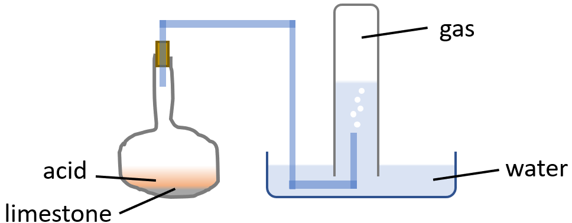

Joseph Black (16 April 1728 - 6 December 1799) was a Scottish physician and chemist. He found that limestone (calcium carbonate) could be heated or treated with acids to yield a gas he called "fixed air." He observed that the fixed air was denser than air and did not support either flame or animal life. Black also found that when bubbled through an aqueous solution of lime (calcium hydroxide), it would precipitate calcium carbonate.
Scientists for the first time realized that there was more than one kind of air and that gases represented a whole new dimension of matter to be explored.
In the 1700s, alkalies were known to include potash, marine (soda), volatile (ammonia), and calcareous (lime). Each of these alkalies could appear in "mild" (carbonate) and "caustic" (hydroxide) forms.
One of Black's investigations was concerned with th nature of limestone. Obtain some limestone and put a small piece into a test-tube containing some water. Nothing happens; but add a few drops of "spirit of salt" (hydrochloric acid), and at once bubbles are given off from the limestone, and this effervesence continues until all the limestone or acid had disappeared.
Take another piece of limestone and heat it to redness; it becomes after a time a porous solid, which no longer effervences with acid, but, on the other hand, if water is added, it swells and becomes hot.
From these experiments we learn, first, that limestone is insoluble in pure water, but is acted upon by an acid with the loss of a gas, leaving something behind which is soluble in water. Second, we learn that heat alters the limestone in such a way that the substance left gives off no gas when treated with the acid. This substance is called quick lime. When water is added is added to quick lime, they form something called 'slaked lime'. Slaked lime is sparingly soluble in water producing an alkaline solution known as limewater.
Joseph Black weighed some pieces of limestone and placed them in a flask, along with water, to which he added some acid, and by means of a tube, connected the flask with a reciever filled with water standing mouth downwards, over a trough full of water:
The gas which was collected was found to be the same in nature and amount as that got by heating limestone.
He next took some lime-water and bubbled the gas through it and obtained a white precipitate, which he proved to be identical with limestone. Since the gas was orginally "locked up" in the limestone, he called it "fixed air". By using a solution of litmus, a Swede, called Bergman, showed that "fixed air" was an acid, and in 1779, the French chemist, Laviosier, proved that "fixed air" was a compound of carbon and oxygen, and renamed it carbonic acid.
Sources: